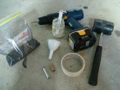
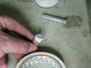
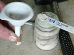
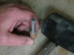
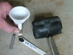
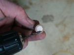
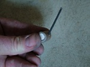

Hummer
From PyroGuide
Hummer fireworks are basically a thick walled tube filled with a composition (mainly black powder) with clay plugs at both ends. An small exhaust hole is drilled on an angle into the side of the tube. When ignited the firework spins on its axis at very high speeds. As the firework spins the exhaust hole, for a very brief time, points towards the observer (the exhaust hole is the source of the noise). The angle in which the exhaust hole points towards the observer changes rapidly and as a result increases / decreases the sound pitch resulting in a humming sound. Hummers are normally inserted inside shells or can be shot out of small mortar tubes.
[edit] Materials Casing Tools Propellant |
[edit] Construction The casing in this example is 30mm long and has an inner diamter of 10mm. The casing wall is about 4mm thick and normally this would be too thin, however it is re-enfored with waterglass (sodium silicate) which prevents the exhaust from buring into a big hole. Temporarily seal one end of the casing with a bit of paper tape. |
|
 Take a small amount of nozzle mix and dump this into the casing, tapping it to settle the powder. The aim is to approximately make the end plug the same thickness of the casings inner diameter. This can be a little tricky and is an important step, an end plug that is too thin will not be able to withstand the inner pressure and blow off. To be consistent make some tooling like a powder scoop to measure exactly the same amount every time. That way you are guaranteed accurate results. |
|
 Insert the ram into the inner casing and gently ram it with your hammer. You don't need to use a huge amount of force to achieve a rock hard end plug. Exerting too much force will split you casing or cause a very small fracture, which under pressure can cause your hummer to CATO. |
|
 Next you need to add the meal powder in small increments (as always, no more at a time than will give a layer after ramming as thick as the casings inner diameter). As with the end plug, using a powder scoop for adding the meal powder can help produce consistent results at this point. If you add too much meal powder you can create small air pockets in the composition and this may again cause the hummer to CATO. Finally, ram a layer of clay again to form an end plug. |
|
 This next step is very important in making your hummer work. You need to drill a hole in the side of the casing on such an angle that it will make your casing spin at very high revolutions. If you get the angle wrong then your casing will not generate the nessessary speed to make a loud humming sound. As depicted, carefully drill the exhaust in the size of the casing about half way along the length of the tube. The angle in which the hole needs to be drilled is the same as in the picture. |
|
 It is recommended that you place a small amount of waterglass around the exhaust hole to prevent it buring into a larger hole. If the hole is allowed to expand the hummer will either loose speed and/or the angle of the exhaust hole will be altered turning the hummer into a bad rocket. Once the waterglass has dried insert a black match or visco fuse into the hole. If the fuse is loose, to prevent it from falling out it may be secured with a small amount of prime. |
[edit] Video
Hummer - By TheDuckTapeKing

{kind=link}
{kind=link}
{kind=link}
{kind=link}
{kind=link}
{kind=link}
{kind=link}